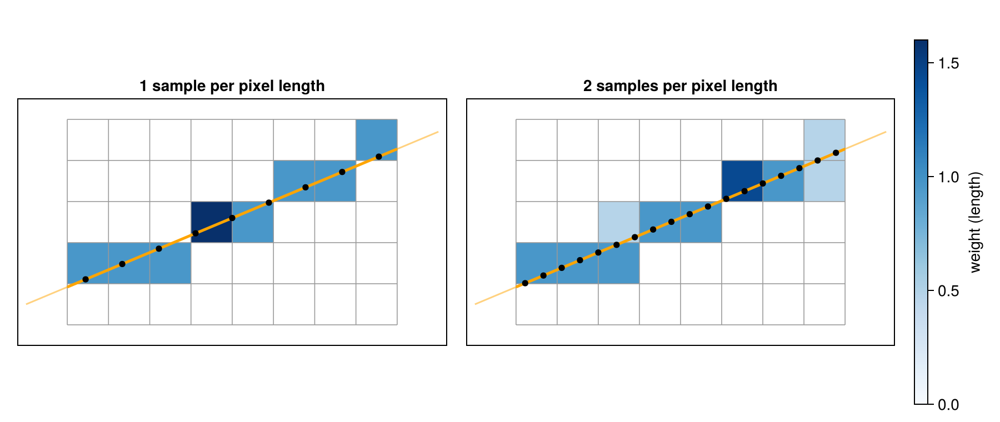

Implement a CT Operator
This guide shows what a new projector has to provide and what it gets in return, by implementing a simple one: it samples the image at equally spaced points along each ray, taking the value of the nearest voxel. The method is too crude for practice, but its kernels are short, so the parts every projector needs stand out.
using CTOperators, KernelAbstractions, Atomix, LinearAlgebra, ImagePhantoms
using ImageGeoms: axis
using CTOperators: VoxelGrid, to_index, clip, device_geometry, storage_arraysampling_figure (generic function with 1 method)The method
Along the part of a ray inside the image the projector places equally spaced samples, about a given number per pixel length (voxel length in 3D). Each sample stands for the length of ray around it and takes the value of the pixel it lies in. A pixel's weight for the ray is the summed length of its samples (blue). The figure shows one ray through a small 2D image, with one sample per pixel length (left) and two (right):

The weights depend on where the samples happen to fall: some pixels collect two samples, and some that the ray crosses near a corner get none. More samples make the weights approach the lengths of the ray in the pixels, Siddon's weights, at a higher cost. Siddon's and Joseph's methods compute their weights directly; see Siddon's Method and Joseph's Method.
Two levels
CTOperators.jl has two abstract types for operators:
AbstractCTOperator: any linear operator between an image and projection data. A subtype implementsimagesize,datasize,forward!(y, op, x),backward!(x, op, y)andKernelAbstractions.get_backend(op). This is enough to wrap a projector of another package, whatever its geometry.AbstractProjector: an operator for anImageGeomand one of the projection geometries of this package. A subtype implementsgeometry,image_geometry,similar_projector,forward!andbackward!; image size, data size and the device follow from the two geometries.
In return an operator works with op * x, mul!, adjoint(op), rowsums, colsums, solvers of RegularizedLeastSquares.jl (with the normal operator normalOperator(op) of LinearOperatorCollection.jl) and automatic differentiation (the ChainRulesCore rule); a projector also with subset for ordered subsets and adapt to move it to another device.
The sampling projector is an AbstractProjector. It works with every geometry, since it only asks each ray for its end points.
The struct
The projector stores what its kernels need: the image grid in the form the kernels use (CTOperators.VoxelGrid: size, voxel size and position, without units), the geometry with its arrays on the device, the KernelAbstractions backend of that device, and its one option, samples, the number of samples per voxel length. The type parameters keep the fields concrete, so that applying the operator is type-stable.
struct SamplingProjector{T,G<:AbstractProjectionGeometry{T},B,I<:ImageGeom} <: AbstractProjector{T,G}
image::I
grid::VoxelGrid{T}
geometry::G
backend::B
samples::T
endThe constructor follows those of the package: keywords eltype and storage choose the precision and the device, and CTOperators.device_geometry converts and moves the geometry accordingly. CTOperators.storage_array returns one of the geometry's arrays, which tells the backend.
function SamplingProjector(image::ImageGeom, geometry::AbstractProjectionGeometry; eltype::Type{T}=Float32,
storage=Array, samples=2) where {T<:AbstractFloat}
g = device_geometry(geometry, T, storage)
SamplingProjector(image, VoxelGrid{T}(image), g, get_backend(storage_array(g)), T(samples))
endMain.SamplingProjectorThe interface
geometry and image_geometry return the two geometries. similar_projector builds the same kind of projector, with the same image and options, for another geometry that is already on the right device and possibly in another element type: subset(op, views) and adapt(CuArray, op) call it.
CTOperators.geometry(op::SamplingProjector) = op.geometry
CTOperators.image_geometry(op::SamplingProjector) = op.image
function CTOperators.similar_projector(op::SamplingProjector, geometry::AbstractProjectionGeometry{T}) where {T}
backend = get_backend(storage_array(geometry))
SamplingProjector(op.image, VoxelGrid{T}(op.image), geometry, backend, T(op.samples))
endThe kernels
Ray-driven projectors run one thread per ray. ray(geometry, i) gives the two points of ray i, where i is the linear index of the ray in the projection data, and raytype whether the ray is the segment between them or the whole line. The helpers of the package work in continuous voxel coordinates, in which voxel (i, j, k) is the unit cube centered at (i, j, k): CTOperators.to_index converts a point, and CTOperators.clip returns the part [amin, amax] of the ray p + α d inside the volume.
The samples sit in the middle of n equal steps along that part, about samples per voxel length; each stands for the length of its step in world units.
@inline function ray_samples(grid, geometry, i, samples)
a, b = ray(geometry, i)
p = to_index(grid, a)
d = (b - a) ./ grid.deltas
amin, amax = clip(p, d, grid.dims, raytype(geometry))
n = amin < amax ? ceil(Int, samples * norm(d) * (amax - amin)) : 0
dalpha = n > 0 ? (amax - amin) / n : zero(amin)
p, d, amin, dalpha, n, norm(b - a) * dalpha
endray_samples (generic function with 1 method)the linear index of the voxel nearest to the voxel coordinate q
@inline function nearest_voxel(grid, q)
nx, ny, nz = grid.dims
ix = clamp(round(Int, q[1]), 1, nx)
iy = clamp(round(Int, q[2]), 1, ny)
iz = clamp(round(Int, q[3]), 1, nz)
ix + (iy - 1) * nx + (iz - 1) * nx * ny
endnearest_voxel (generic function with 1 method)The forward projection sums the sampled values along the ray. The back projection is its transpose: every ray adds its value, times the same weights, to the same voxels. Many rays reach the same voxel at the same time, so the additions are atomic.
@kernel function sampling_forward!(y, @Const(x), grid, geometry, samples)
i = @index(Global, Linear)
p, d, amin, dalpha, n, w = ray_samples(grid, geometry, i, samples)
acc = zero(eltype(y))
for k in 1:n
acc += x[nearest_voxel(grid, p + (amin + (k - eltype(y)(0.5)) * dalpha) * d)]
end
y[i] = w * acc
end
@kernel function sampling_backward!(x, @Const(y), grid, geometry, samples)
i = @index(Global, Linear)
p, d, amin, dalpha, n, w = ray_samples(grid, geometry, i, samples)
v = w * y[i]
for k in 1:n
Atomix.@atomic :monotonic x[nearest_voxel(grid, p + (amin + (k - eltype(y)(0.5)) * dalpha) * d)] += v
end
endsampling_backward! (generic function with 4 methods)Code in kernels has to compile for GPUs: no allocations, no dynamic dispatch, and no closures that capture a variable which is reassigned (the loop state of a ray), since Julia boxes such variables. Small vectors are SVectors, as those that ray and to_index return.
forward! and backward! launch the kernels, one thread per ray. They receive arrays of the image and data shapes; the kernels index them linearly. The back projection accumulates, so it first clears the image.
function CTOperators.forward!(y, op::SamplingProjector, x)
sampling_forward!(op.backend)(y, vec(x), op.grid, op.geometry, op.samples; ndrange=nrays(op.geometry))
y
end
function CTOperators.backward!(x, op::SamplingProjector, y)
fill!(x, zero(eltype(x)))
sampling_backward!(op.backend)(vec(x), y, op.grid, op.geometry, op.samples; ndrange=nrays(op.geometry))
x
endUsing it
The new projector works like those of the package, here on a helical cone-beam scan:
n = 64
image = ImageGeom(; dims=(n, n, n), deltas=(1.0, 1.0, 1.0))
geometry = helical_cone_beam(; angles=range(0, 4pi, 121)[1:120], pitch=n / 2, z0=-n / 2, dso=2n, dsd=4n,
nu=192, nv=96, du=1.0)
op = SamplingProjector(image, geometry)
size(op), datasize(op)((2211840, 262144), (192, 96, 120))The first check of every projector: the back projection is the transpose of the forward projection, ⟨A x, y⟩ = ⟨x, Aᵀ y⟩ for any x and y, up to rounding.
x, y = rand(Float32, imagesize(op)), rand(Float32, datasize(op))
dot(op * x, y) / dot(x, adjoint(op) * y)0.9999985f0Subsets, normalizations and moving to another device come for free:
datasize(subset(op, 1:10)), size(colsums(op))((192, 96, 10), (64, 64, 64))The projection of the Shepp-Logan phantom against that of Joseph's method, for 1, 2 and 4 samples per voxel length. More samples reduce the difference, down to the difference between the nearest voxel's value and Joseph's interpolation:
objects = ellipsoid(ellipsoid_parameters(; fovs=(n, n, n)))
x_true = Float32.(phantom(axis(image, 1), axis(image, 2), axis(image, 3), objects, 2))
y_joseph = JosephProjector(image, geometry) * x_true
[norm(SamplingProjector(image, geometry; samples=s) * x_true - y_joseph) / norm(y_joseph) for s in (1, 2, 4)]3-element Vector{Float32}:
0.02613222
0.0205938
0.018880578Tests
Every projector should pass the adjoint test above for several geometry types, and its results in Float32 and on other devices should agree with Float64 on the CPU:
op64 = SamplingProjector(image, geometry; eltype=Float64)
op32 = SamplingProjector(image, geometry; eltype=Float32)
x = rand(imagesize(op64)...)
isapprox(op32 * Float32.(x), op64 * x; rtol=1e-4)Inside this repository, the test snippet Contract in test/operators/contract.jl runs these tests on problems that cover the geometry types, also on JLArrays and GPUs. A projector's test file calls it:
@testitem "Sampling: contract" tags = [:sampling, :gpu] setup = [Backends, Contract] begin
contract_tests(SamplingProjector, arrayTypes, floatTypes)
endFurther tests check what the method promises, for example exact line integrals for images the method represents exactly, compared with the analytic projections of ImagePhantoms.jl.
Wrapping another package
A projector of another package, with its own geometry, becomes an AbstractCTOperator with five methods. For a package that provides project! and backproject!, roughly:
struct WrappedOperator{T,P} <: AbstractCTOperator{T}
plan::P # whatever the package needs
imagesize::NTuple{3,Int}
datasize::NTuple{3,Int}
end
CTOperators.imagesize(op::WrappedOperator) = op.imagesize
CTOperators.datasize(op::WrappedOperator) = op.datasize
KernelAbstractions.get_backend(op::WrappedOperator) = CPU()
CTOperators.forward!(y, op::WrappedOperator, x) = project!(y, op.plan, x)
CTOperators.backward!(x, op::WrappedOperator, y) = backproject!(x, op.plan, y)The rest of the interface, including use in solvers (with normalOperator(op)), then follows as for the projectors here.
This page was generated using Literate.jl.